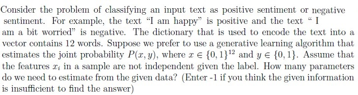
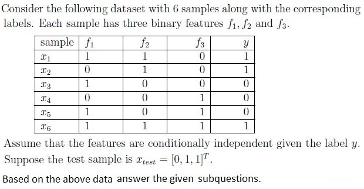
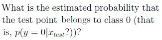

You are working on a decision tree algorithm to classify whether a bank loan applicant will default on their loan based on several financial factors. The dataset includes Credit Score, Annual Income, Loan Amount, Loan Term as features. The target variable is binary: 1 for ”Default” and 0 for ”No Default.” You have a dataset of 500 loan applicants, and you want to construct a decision tree to predict loan default. To determine the first split (root node), you'll use the information gain as the criterion. Here’s the distribution of loan default in the dataset: Default: 150 applicants No Default: 350 applicants Calculate the Entropy for the initial dataset.
Q10SA4 marks

Q11SA2 marks
Given a training dataset with 100 data points, how many distances would we have to compute in the process of predicting the label of test-point in the k-NN algorithm with k = 5
Q12SA2 marks
If the proportion of points belonging to class 1 in a node is p, for what value of p is the node’s entropy maximum?
Comprehension passage - the questions below it refer to this

Q13SA3 marks

Q14SA3 marks
What will be the predicted label according to the Naive Bayes decision rule?